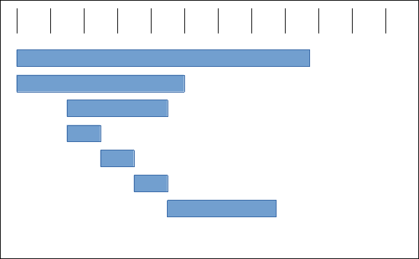
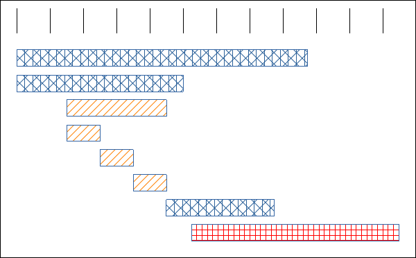

De
"0" à "tracing distribué"
en quelques lignes de code,
c'est possible !
Vincent Lepot - Forum PHP - 10 & 11 Octobre 2024
Imaginons une application !
Ici bientôt une capture d'écran
Comment est-on organisé ?
Equipe catalogue de films
Equipe gestion des utilisateurs
Equipe gestion des listes
Equipe "partie visible"
Comment est architecturé notre application ?
Qui connait la loi de Conway ?
Loi de Conway
« Toute organisation qui conçoit un système, au sens large, concevra une structure qui sera la copie de la structure de communication de l'organisation. »
- Melvin Conway, 1967
Source : https://fr.wikipedia.org/wiki/Loi_de_Conway
Notre organisation
Equipe catalogue de films
Equipe gestion des utilisateurs
Equipe gestion des listes
Equipe "partie visible"
Notre architecture
lesfilmsquejekiffe

Catalog service

User service
Favlist service
Vous voulez voir à quoi ça ressemble ?
OpenTelemetry c'est quoi ?
Une trace c'est quoi ?
Une trace c'est quoi ?
Et une trace distribuée c'est quoi ?
Et une trace distribuée c'est quoi ?
Pourquoi la recherche de performance ?
1.
Améliorer l'expérience utilisateur
2.
Améliorer la performance économique
Et surtout 3.
Augmenter la durée de vie du matériel
Qui connait la loi de Moore ?
Loi de Moore
« Le nombre de transistors dans un semiconducteur double tous les 2 ans »
- Gordon E. Moore, 1975
Source : https://fr.wikipedia.org/wiki/Loi_de_Moore
La loi de Moore est morte, vive La loi d'erooM
Source : Computer Architecture: A Quantitative Approach, sixth edition
A lire : La loi de Moore est morte et c'est une bonne nouvelle de Tristan Nitot
Optimisez votre code !
Merci
Vincent Lepot
@zibok@pouet.chapril.org